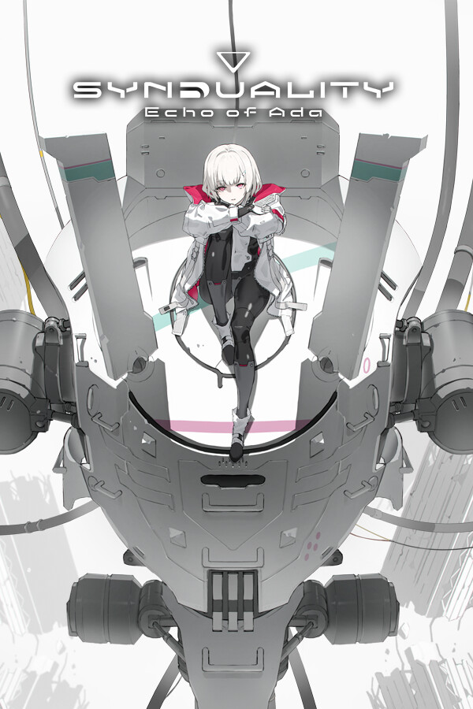

SYNDUALITY Echo of Ada
SYNDUALITY Echo of Ada
Details
 |
|
| Playtime | Not Played |
| Last Activity | Never |
| Added | 12/6/2025 11:50:34 |
| Modified | 12/6/2025 11:50:43 |
| Completion Status | Not Interested |
| Library | PlayStation |
| Source | PlayStation |
| Platform | Sony PlayStation 5 |
| Release Date | 1/23/2025 |
| Community Score | 41 |
| Critic Score | 70 |
| User Score | |
| Genre | Action |
| Developer | Game Studio Inc. |
| Publisher | Bandai Namco Entertainment |
| Feature | Achievements Cloud Saves Family Sharing Full Controller Support In-App Purchases Multi-Player Online Pvp Pvp Single-Player |
| Links | Official Website Steam Twitch Discord Xbox Playstation Wikipedia |
| Tag | PlayStation Plus |
Description
SYNDUALITY Echo of Ada takes place in 2222, years after a mysterious poisonous rain called The Tears of the New Moon wiped out most of humanity and birthed deformed creatures that now hunt the population. Amidst the calamity, humans are forced to build an underground haven to survive.
Take on the role of a Drifter whose goal is to collect the rare resource known as AO Crystals. In your quest, you must collaborate with your artificial intelligence partner to face xenomorphic creatures known as Enders and survive the hazards on the surface.
Rise from the underground to a surface world infested with hostile Enders, toxic rains, and other enemies, as you fight to loot for resources. Ride your CRADLECOFFIN, cooperate with your Magus, and stay alert around other players. One false move is all it takes to lose both your mecha and precious supplies, left to be scavenged by the remaining survivors.
This humanoid AI supports in exploration, scavenging, and combat. Each model type has a different personality, and its appearance can be extensively customized. They operate by giving tailored feedback on the objective based on analysis of your previous performance in sorties so you don’t make the same mistakes twice. Keep them close, as Magus can also unleash unique abilities when you are in a tough spot!
The CRADLECOFFIN is an all-weather bipod developed for the harsh terrain of the surface. Each mecha has a different endurance level, load capacity, operation time, and can be further customized with many body parts and weapons to suit each sortie and try new playstyles. Craft new parts by collecting resources and upgrading the garage and discover how powerful a CRADLECOFFIN can become!
Take on the role of a Drifter whose goal is to collect the rare resource known as AO Crystals. In your quest, you must collaborate with your artificial intelligence partner to face xenomorphic creatures known as Enders and survive the hazards on the surface.
SURVIVE THE SURFACE
Rise from the underground to a surface world infested with hostile Enders, toxic rains, and other enemies, as you fight to loot for resources. Ride your CRADLECOFFIN, cooperate with your Magus, and stay alert around other players. One false move is all it takes to lose both your mecha and precious supplies, left to be scavenged by the remaining survivors.
THE MAGUS - YOUR PERSONAL PARTNER TO KEEP
This humanoid AI supports in exploration, scavenging, and combat. Each model type has a different personality, and its appearance can be extensively customized. They operate by giving tailored feedback on the objective based on analysis of your previous performance in sorties so you don’t make the same mistakes twice. Keep them close, as Magus can also unleash unique abilities when you are in a tough spot!
THE CRADLECOFFIN - YOUR VEHICLE TO RIDE
The CRADLECOFFIN is an all-weather bipod developed for the harsh terrain of the surface. Each mecha has a different endurance level, load capacity, operation time, and can be further customized with many body parts and weapons to suit each sortie and try new playstyles. Craft new parts by collecting resources and upgrading the garage and discover how powerful a CRADLECOFFIN can become!